Japan / Ibaraki / Kawachimachi
Kawachimachi, Ibaraki: things to do, food and stays
Kawachimachi · Ibaraki
Kawachimachi
Highlighted on the Ibaraki map.
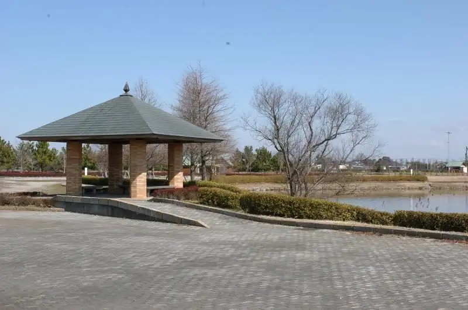
Stay
No bookable places to stay found in Kawachimachi — nearest options in Ryugasaki.
Dining
ラーメンショップ 椿 河内店
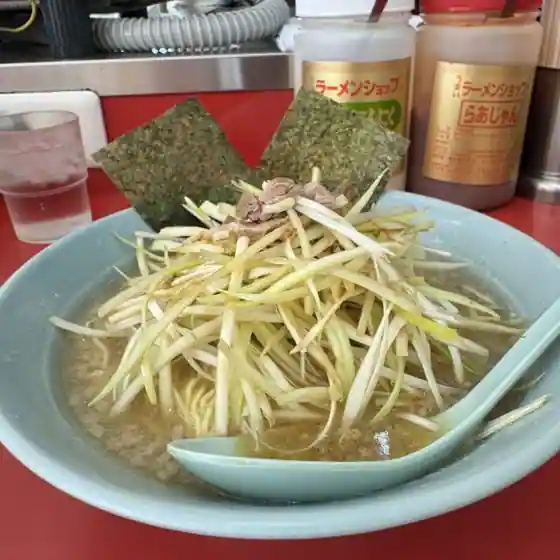
Ramen Shoppu Tsubaki Kawauchi
長竿亭
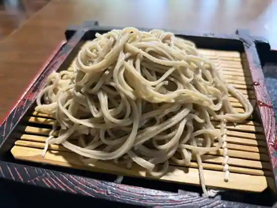
Cho Sao Tei
レストラン香取
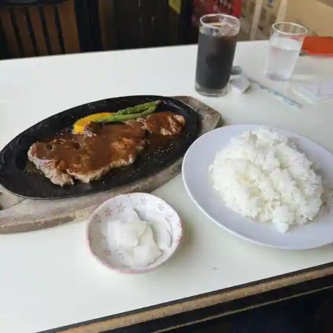
Restaurant Katori
Cafe BLUE
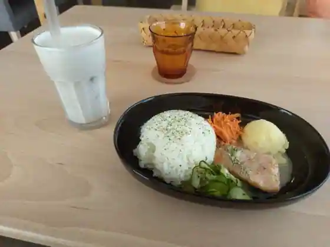
Cafe BLUE
wo-29 Butchers 河内店
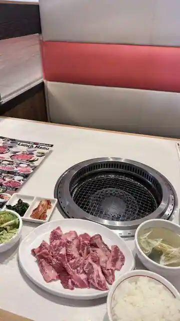
wo-29 Butchers Kawauchi
S☆Garage Coffee
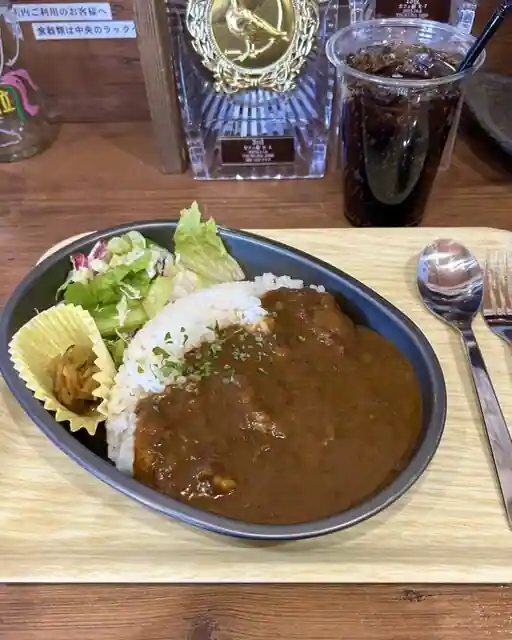
S Garage Coffee
好寿し
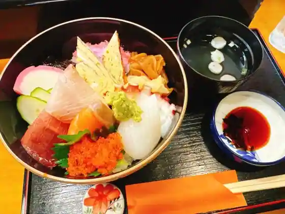
Ko Hisashi Shi
咲や姫
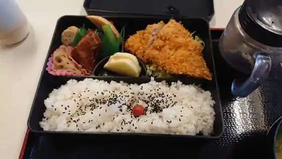
Saki Ya Hime
トラベリング カレー
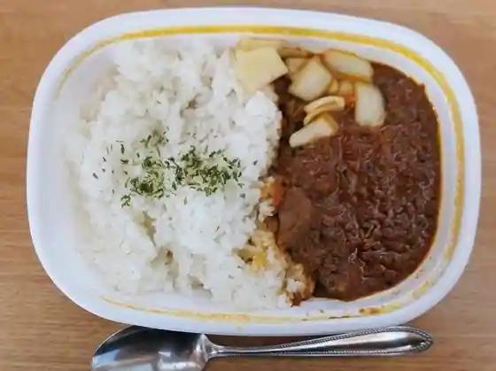
Toraberingu Kare
Sights
Mizu to Midori no Fureai Park
Cho Sao Tei
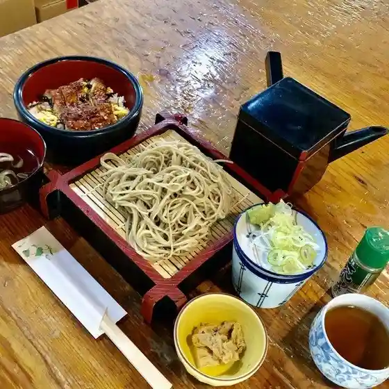